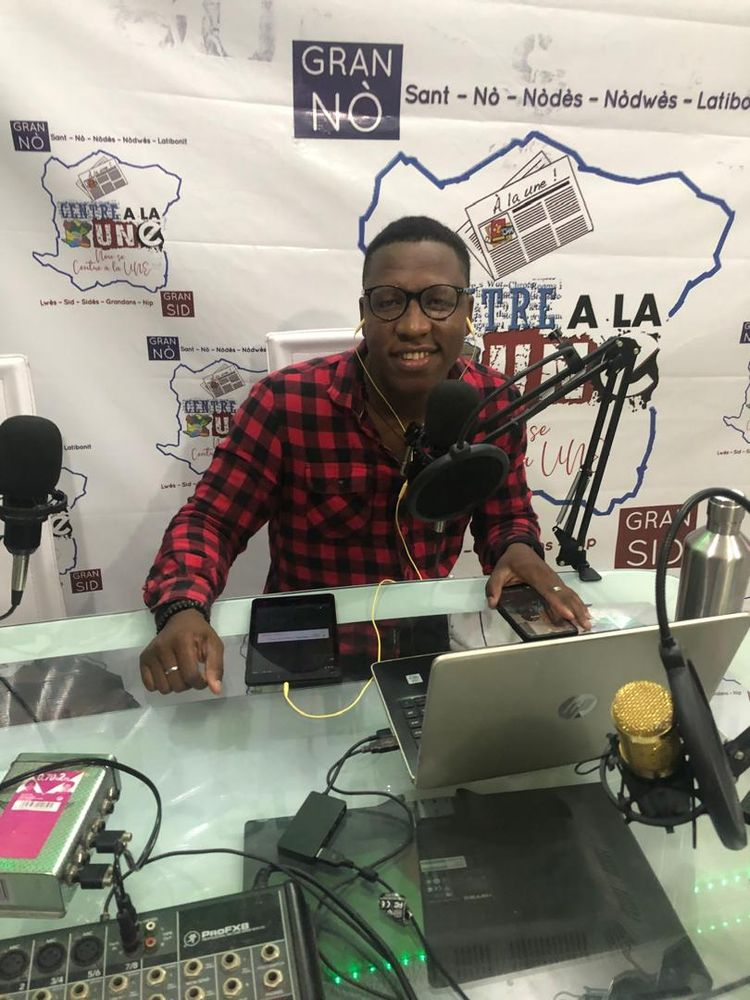
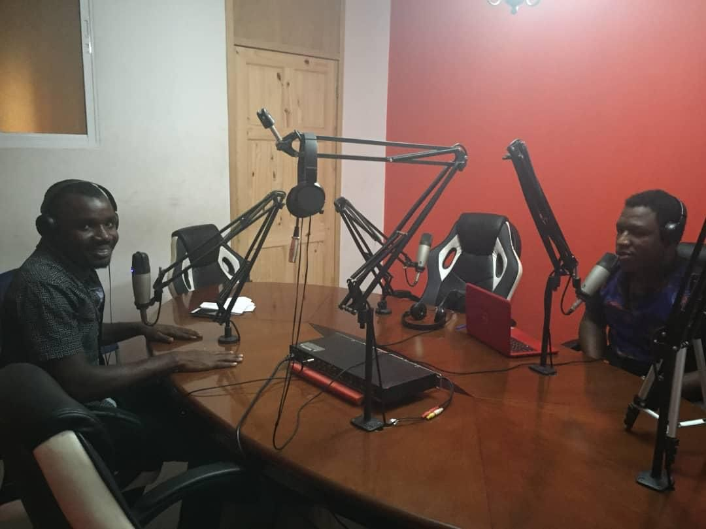

Maîtrise en aménagement du territoire
Planification, gouvernance et développement territorial.
Sciences politiques · Diplomatie et relations internationales · Sciences juridiques · Aménagement du territoire
Journaliste · Entrepreneur · Professionnel de la communication

Journaliste, entrepreneur et professionnel de la communication, Jefferson Bonissant possède une expérience en rédaction d’actualité, en couverture sociopolitique, en conduite d’entretiens et en collecte d’informations sur le terrain.
Son parcours académique associe les sciences politiques, la diplomatie et les relations internationales, ainsi que les études en sciences juridiques. Il poursuit actuellement une maîtrise en aménagement du territoire.
Fondateur du média AyitiPost et initiateur de plusieurs projets entrepreneuriaux à Mirebalais, il a développé un profil pluridisciplinaire, à la croisée de l’information, de l’analyse des enjeux publics, de la communication et de l’initiative économique.
Rigoureux et assidu dans ses engagements professionnels, ses centres d’intérêt portent notamment sur les politiques publiques, la gouvernance, les droits humains, la coopération internationale et les dynamiques territoriales.
Planification, gouvernance et développement territorial.
Formation en sciences politiques, option Diplomatie et relations internationales.
Parcours universitaire en sciences juridiques.
Formation en communication et administration.
Coordination éditoriale et suivi de la production d’information. Voir GlobalInfos sur X ↗
Rédaction et publication d’articles d’actualité et de sujets d’intérêt public.
Interviews, couverture d’événements et contribution à des contenus radiophoniques.
Conduite d’entretiens, collecte, traitement et analyse d’informations dans le cadre de missions ponctuelles.
Coprésentation de l’émission « IMPLICATION », rédaction et interviews.

Parcours et publications auprès de AyitiPost, GlobalInfos, Premium Média, Fact Checking News, Centre à la UNE, Radio Puissance FM, Radio Zao FM et Radio Hit FM 93.9.
Une sélection de contributions publiées dans différents médias. Les liens renvoient aux publications d’origine.
Retrouvez également mes contributions et activités sur ces plateformes.
Émission radiophonique consacrée à l’actualité et aux échanges d’intérêt public.
Coprésentation d’une émission radiophonique.
Coprésentation du magazine radiophonique.
Participation à un échange sur l’engagement citoyen.

Création d’une initiative dans la production et la diffusion d’informations.
Services bureautiques, impression, photographie, produits électroniques et services de proximité.
Design graphique et communication visuelle.
Initiative commerciale.
Engagement associatif auprès de jeunes universitaires.
Représentation d’EPASI lors d’un événement organisé par le PNUD en 2026, au Campus Henry Christophe de Limonade de l’Université d’État d’Haïti.
Engagement associatif actuel.
Rédaction journalistique, interviews, couverture de l’actualité, vérification de l’information.
Communication institutionnelle, rédaction de contenus, communication numérique.
Enquêtes de terrain, collecte d’informations, recherche documentaire, analyse sociopolitique.
Coordination éditoriale, gestion de projets, initiatives entrepreneuriales.
Langues : créole haïtien (langue maternelle), français (avancé), anglais (intermédiaire).
Vous souhaitez échanger dans un cadre professionnel, proposer une collaboration ou demander mon curriculum vitæ ? N’hésitez pas à me contacter.
Références professionnelles disponibles sur demande.